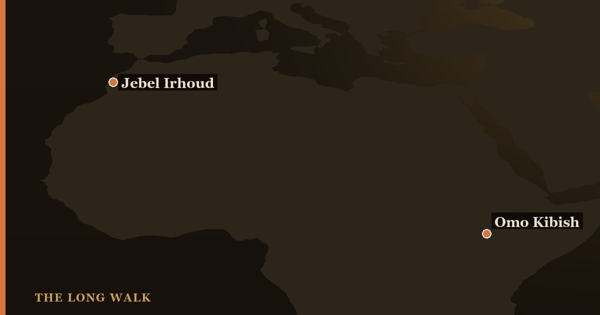

Jebel Irhoud, Morocco, holds fossils dated to ~315,000 years old—the oldest known Homo sapiens—but shows a mosaic of modern and archaic features. Omo Kibish, Ethiopia, has fossils dated to at least ~233,000 years that look more fully modern. Together, these sites prove our species arose across Africa, not in one place, through deep time and genetic exchange between distant populations.

For decades, Homo sapiens seemed to have a single birthplace. Anthropologists argued about whether modern humans emerged in Africa around 200,000 years ago, and a handful of fossil sites—mainly in East Africa—dominated the debate. But in the last fifteen years, two discoveries have rewritten that story. Jebel Irhoud in Morocco and Omo Kibish in Ethiopia now stand as the oldest known representatives of our species, and they paint a radically different picture: one in which Homo sapiens did not emerge in isolation, but spread across an entire continent while populations exchanged genes over hundreds of thousands of years.
The redating of these sites, combined with new genetic evidence, has shifted how we understand human origins. We are no longer looking for a single moment in a single place. Instead, we are learning to think of Homo sapiens as a pan-African species, arising from older, interconnected populations across North Africa, East Africa, and beyond. Jebel Irhoud and Omo Kibish are the two strongest pieces of evidence for this view—and understanding what makes them different, and what they have in common, is key to understanding who we are.
| At a glance | Jebel Irhoud (Morocco) | Omo Kibish (Ethiopia) |
|---|---|---|
| Location | North Africa (northwest Morocco) | East Africa (southern Ethiopia) |
| Age | ~315,000 years (redated 2017) | ~233,000 years minimum (redated 2022) |
| Key fossils | Five skulls, including cranium BN, and other bones | Omo I and Omo II skulls, plus postcranial remains |
| Skull shape | Modern face; long, low braincase (mosaic) | More fully modern skull, including rounded braincase |
| Associated tools | Middle Stone Age stone tools; evidence of fire use | Middle Stone Age stone tools |
| Significance | Oldest known Homo sapiens; shows modern face evolved first | Among oldest fully modern-looking skulls; defined "anatomically modern" for decades |
Where did Homo sapiens begin?
The question sounds simple, but it is one of the hardest in paleoanthropology. For much of the twentieth century, scientists looked for a single "Garden of Eden"—one place where modern humans first appeared, fully formed, and then spread to the rest of the world. This idea made sense given the fossil record, which was sparse and fragmented. But as new discoveries accumulated and methods improved, especially genetic sequencing of ancient DNA, the old story began to crack.
Today, the evidence points not to a garden but to a continent. Homo sapiens appears to have arisen across Africa, with populations in different regions evolving modern features at different times and in different combinations. The oldest skulls are not from a single location but scattered across the continent—and the two oldest are Jebel Irhoud and Omo Kibish. These sites are not just older than we thought; they challenge us to rethink what "modern human" means.
Jebel Irhoud: the oldest known Homo sapiens
In 2017, paleoanthropologist Jean-Jacques Hublin and his team published a bombshell. They had redated the fossils from Jebel Irhoud, a site in northwestern Morocco, using new radiometric techniques applied to the stone tools and sediments around the bones. The result: the Jebel Irhoud fossils were not 160,000 years old, as previously thought, but closer to 315,000 years old. At a stroke, they became the oldest known Homo sapiens fossils in the world.
What makes Jebel Irhoud remarkable is not just the age but the anatomy. The skulls, particularly the specimen called BN (from excavations in the 1960s), show a strikingly modern face: it is small, tucked underneath the braincase, with features we recognize in ourselves. But the braincase itself—the back and top of the skull—is long and low, more like older human ancestors. This combination is called a "mosaic." It tells us something profound: the modern human face evolved before the modern human brain shape. Our ancestors looked like us in the face long before their heads were as round as ours.
The Jebel Irhoud site also yielded stone tools typical of the Middle Stone Age, along with evidence that its inhabitants made and controlled fire. These people were not anatomically modern by every measure, but they were unmistakably Homo sapiens—and they lived in North Africa more than 300,000 years ago.
Omo Kibish: the East African claim
While Jebel Irhoud rewrites the story from the north, Omo Kibish, in southern Ethiopia, makes a parallel claim from the east. The site is famous for two skulls, called Omo I and Omo II, discovered in 1967 by an international team that included the renowned paleoanthropologist Richard Leakey. For decades, Omo I was considered the oldest anatomically modern human skeleton—a crown jewel of human origins research.
For a long time, Omo Kibish was dated to around 195,000 years ago. But in 2022, a team led by Céline Vidal used a more precise method, dating volcanic ash layers directly above and below the fossils. The new date: at least 233,000 years ago. This single revision moved Omo Kibish into competition with Jebel Irhoud as one of the oldest Homo sapiens sites on Earth.
The Omo skulls look more fully modern than those from Jebel Irhoud. Omo I, in particular, shows a rounded braincase and a modern-looking face together—a complete anatomical package of modernity. This is why Omo Kibish held the title of "oldest modern human" for so long: it looked the part. The stone tools found at the site are consistent with the Middle Stone Age, marking a time of sophisticated hunting and tool-making in East Africa.
Key differences: mosaic versus modern
At first glance, Jebel Irhoud and Omo Kibish seem to tell conflicting stories. One is older but looks partly archaic; the other is younger but looks fully modern. How can the same species show such different anatomy at different times?
The answer lies in geography and time. Jebel Irhoud and Omo Kibish are thousands of kilometers apart, separated by the Sahara Desert and the East African landscape. They were occupied at different times, even within the broader window of Homo sapiens origins. It is entirely plausible—and in fact likely—that populations in different parts of Africa followed different evolutionary paths, accumulating different combinations of modern and archaic features. The mosaic anatomy of Jebel Irhoud does not mean it was less "modern" than Omo; it means modernity itself was not a single, coordinated transformation across the continent. Different regions evolved different aspects of the modern human form at different rates.
This is a key insight: Homo sapiens did not emerge fully formed in one place and then colonize the world. Instead, the species evolved as a collection of African populations, each adapted to its own environment, but connected through gene flow and interaction over vast timescales. Jebel Irhoud shows us the northern branch of this story, with a modern face emerging early. Omo Kibish shows us the eastern branch, with full modernity achieved slightly later.
A pan-African origin
The comparison between these two sites points toward a revolutionary idea: Homo sapiens has a pan-African origin. Rather than a single birthplace, our species arose from the interaction of populations spread across the African continent, from the Mediterranean coast to the Indian Ocean, over hundreds of thousands of years.
This idea is supported by recent genetic work, especially ancient DNA studies, which show that modern African populations carry genetic ancestry from multiple deeply divergent lineages. These lineages did not stay separate; instead, they mixed and interbred, creating the genetic diversity we see today. Jebel Irhoud and Omo Kibish are the fossil evidence of this process—snapshots of what our ancestors looked like as these populations interacted and evolved.
A third important site, Herto in Ethiopia, dated to around 160,000 years ago, further supports this picture. Herto's fossils are assigned to a subspecies, Homo sapiens idaltu, and they show yet another variation on the theme of early modern humans. Together, Jebel Irhoud, Omo Kibish, and Herto paint a picture of an Africa populated by evolving, interacting populations of our own species, all contributing to the genetic and anatomical heritage we carry today.
Why it matters
The redating and reinterpretation of Jebel Irhoud and Omo Kibish have profound implications for how we understand ourselves. For most of human history, we thought of our species' origins as a singular event—a moment when modern humans appeared, ready to conquer the world. But the real story is richer and more complex.
By pushing the origin of Homo sapiens back to over 300,000 years ago and spreading it across an entire continent, these sites show us that modern humans evolved in a web of populations, in a process that took hundreds of thousands of years. We did not arrive on the scene as fully modern beings; we became modern gradually, in different ways, in different places. The modern human form—our bodies, our brains, our behavior—was assembled over deep time from multiple African lineages.
This also changes how we think about human diversity. If Homo sapiens arose across Africa through the interaction of multiple populations, then human genetic and cultural diversity is not a recent accident but a fundamental feature of our species, baked into our origins. Understanding Jebel Irhoud and Omo Kibish helps us understand why humans today, scattered across the globe, share a common African ancestry that is also deeply diverse.
The story of human origins is not finished. New sites continue to be discovered, and new dating techniques continue to refine our estimates. But Jebel Irhoud and Omo Kibish have already shown us that we were not born in a garden, but across a continent, over hundreds of thousands of years, in the deep African past.
See where the oldest Homo sapiens fossils sit in Africa on the interactive deep-time tree.
Explore the family tree →Frequently asked questions
What is the difference between Jebel Irhoud and Omo Kibish?
Jebel Irhoud, Morocco, holds fossils dated to ~315,000 years old—the oldest known Homo sapiens—but shows a mosaic of modern and archaic features. Omo Kibish, Ethiopia, has fossils dated to at least ~233,000 years that look more fully modern.
Where did Homo sapiens begin?
The question sounds simple, but it is one of the hardest in paleoanthropology. For much of the twentieth century, scientists looked for a single "Garden of Eden"—one place where modern humans first appeared, fully formed, and then spread to the rest of the world.
- Hublin, J.-J. et al. (2017). 'New fossils from Jebel Irhoud, Morocco and the pan-African origin of Homo sapiens.' Nature 546. nature.com
- McDougall, I., Brown, F.H. & Fleagle, J.G. (2005). 'Stratigraphic placement and age of modern humans from Kibish, Ethiopia.' Nature 433. nature.com
- Smithsonian Human Origins — Homo sapiens. humanorigins.si.edu